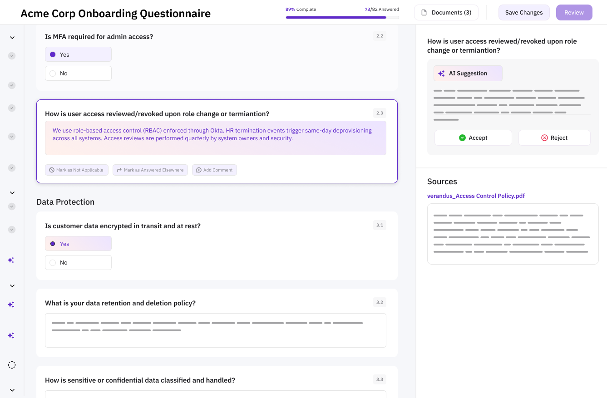
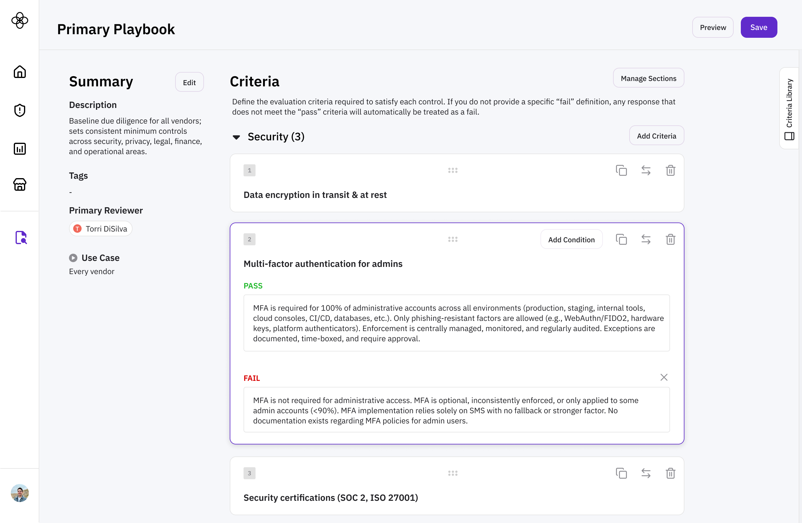
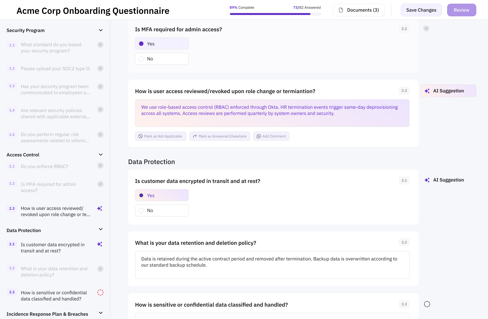
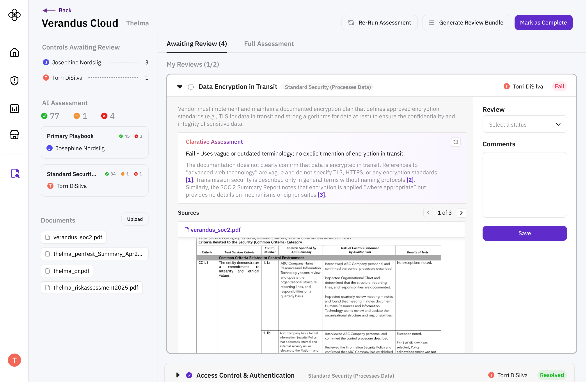

Back

Third-Party Risk Manager (TPRM)
Our TPRMs are responsible for reviewing vendor documentation against internal controls to assess onboarding risk. Evidence review is slow and highly manual, and many risk managers lack the authority to block a risky vendor. They have difficulty proving the value of due diligence when the business simply wants to move fast and, as a result, their works is perceived as a bottleneck rather than an important risk standard.
Vendors
Vendors want to move through onboarding quickly so they can start delivering value to customers (and start making money!). But their documentation uploads are often incomplete or incorrectly filled out by sales reps who don’t know the technical details. This leads to delays and repeated back-and-forth requests for clarification.
I led the research and design for the Due Diligence module. Our Head of Eng. and CTO also participated in the interview process, which helped align the broader team around user needs from the get-go.
As of February 2026, we don't yet have isolated metrics for the Due Diligence module alone, but we do know that teams using our full suite of TPRM tools have reduced their quarterly effort from 2-3 weeks to roughly 2 hours (!!!). I'm happy to say our early adopters really do love what they're seeing, and though we don't have business impact numbers yet, it feels good and validating to know we're making their work easier.
Interviews
Our research kickoff timing serendipitously overlapped with a Security & Third-Party Risk summit, which I attended on behalf of Clarative. My colleague (Head of Eng.) and I conducted dozens of lightning interviews at the conference, and followed-up with deep-dive interviews and mock-up feedback sessions after the conference.
Understand how the practitioner feels: This gathering was composed entirely of our target users, and a perfect way to deeply understand how they felt about their existing processes, regulatory + stakeholder pressure, and other pain points.
Iterate throughout the interview process: Time is of the essence, and with a finite number of interviews scheduled, we treated each interview block as a “learning sprint” - we debriefed and iterated on questions/discovery mocks each afternoon to validate our understanding with the next day’s participants.
Convert interviews into design partnerships and future customers: Research sessions can be a great way to bring up design partnerships and proof-of-concept trials, framed as “you can help shape the product as we’re building it”.
Landscape Analysis
Due Diligence products already exist. To design something meaningfully better, I conducted structured research into the platforms TPRMs are already using, focusing on both strengths and gaps.
Product evaluation through documentation pages and resources
Practitioner sentiment analysis through what they explicitly like or don’t like about their current tools
Public demo and webinar video review
Design Thinking & Stakeholder Alignment
After two weeks of interviews, I led a design thinking session for engineering and sales to decompose all the signal we heard, align on product focus, build user empathy among the engineers, and empower the sales team with talking points that would resonate with potential customers.
Empathy mapping
How Might We (HMW) statements
Translating HMW to product features
Playbooks, where TPRMs define their vendor evaluation criteria

Questionnaires, where vendors fill out usage information with AI assistance from documentation extraction to speed up the process

Assessment Review, where TPRMs review vendor evidence (documentation, questionnaire responses, etc.) and flag risk findings

Weekly customer sessions
Our CTO led weekly feedback sessions with early adopters, and we came prepared with clear goals for each meeting to ensure users could meaningfully test the product and fully experience the vision for how our tool would fit into their day-to-day processes.
Demo Videos & Resources
I created resources for various audiences throughout our rollout process. These included
Sales videos: Value-driven videos highlighting business value
Demo videos: Feature-driven videos focusing on elements we know practitioners will resonate with
User Stories: Manuals and examples for how to incorporate Clarative evidence review into a user’s workflow
Implementing the Due Diligence module marked our first true deep dive into the third-party risk management space—an area I knew very little about going in. Gaining fluency in governance, risk, and compliance was honestly really challenging, but it pushed me to become much more rigorous in how I learn complex domains. What made the process rewarding was seeing that effort translate into meaningful customer impact. Hearing feedback like, “Clarative is worth it 100%… it gives you so much more time and scope to actually do the job properly,” and “It's a simple, graceful solution to quite a large problem,” feels really good and reinforced that we had succeeded in distilling a dense, high-stakes workflow into something intuitive and valuable.
Looking back, I see opportunities where I could have developed a broader view of the landscape beyond direct user interviews (e.g. incorporating more market & regulatory analysis). At the same time, this project marked a shift in how I show up as a designer. I moved beyond executing quickly on mocks to leading cross-functional alignment, advocating for a clear user-centered vision, and thinking more from a product and leadership perspective. It strengthened my ability to guide teams through ambiguity and align around thoughtful, high-impact solutions.